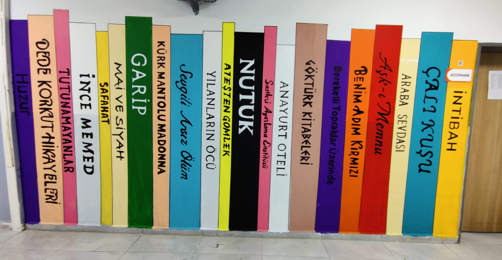

KÜLTÜR SANAT
TÜRK EDEBİYATI VE KÜTÜPHANE
Sözün, kitabın ve belleğin buluştuğu yer
Türk edebiyatı, çok geniş bir zaman dilimine yayılan zengin bir kültür hazinesidir. Destanlar, masallar, halk hikâyeleri, şiirler, romanlar, tiyatro eserleri ve denemeler; Türkçenin farklı dönemlerde nasıl geliştiğini ve toplumun hangi duygularla yaşadığını gösterir. Edebiyat, yalnızca güzel söz söyleme sanatı değildir; aynı zamanda insanı, toplumu, tarihi ve hayalleri anlama yoludur.
Sözlü edebiyat geleneği, Türk kültürünün en eski kaynaklarından biridir. Destanlarda kahramanlık, dayanışma, doğa ve toplum düzeni anlatılır. Halk hikâyeleri ve türküler ise günlük yaşamın sevinçlerini, acılarını, aşklarını ve umutlarını kuşaktan kuşağa taşır. Yazılı edebiyat geliştikçe bu birikim kitaplara, dergilere, romanlara ve şiir kitaplarına dönüşmüştür.
Kütüphaneler, bu büyük edebiyat ve bilgi mirasının korunduğu özel mekânlardır. Bir kütüphane, yalnızca raflara dizilmiş kitaplardan oluşmaz. Orada geçmişin sesleri, bugünün soruları ve geleceğin hayalleri bir araya gelir. Okur, bir kitabı eline aldığında başka bir insanın düşüncesiyle, başka bir dönemin yaşamıyla ya da tamamen yeni bir hayal dünyasıyla karşılaşır.
Kütüphane alışkanlığı, öğrenciler için çok değerlidir. Düzenli okuyan bir öğrenci kelime hazinesini geliştirir, daha iyi yazar, daha iyi konuşur ve daha derin düşünür. Edebiyat kitapları ise öğrencinin yalnızca bilgisini değil, duygusal dünyasını da zenginleştirir. Bir roman kahramanının yerine kendini koymak, empati kurmayı ve farklı bakış açılarını anlamayı sağlar.
Türk edebiyatı ve kütüphane birlikte düşünüldüğünde, karşımıza güçlü bir kültür köprüsü çıkar. Bu köprü bizi geçmişe bağlarken geleceğe de hazırlar. Çünkü kitap okuyan, edebiyatla tanışan ve kütüphaneyi yaşayan bir insan; kendini daha iyi ifade eder, başkalarını daha iyi anlar ve yaşamı daha dikkatli gözlemler.
Sözlü edebiyat geleneği, Türk kültürünün en eski kaynaklarından biridir. Destanlarda kahramanlık, dayanışma, doğa ve toplum düzeni anlatılır. Halk hikâyeleri ve türküler ise günlük yaşamın sevinçlerini, acılarını, aşklarını ve umutlarını kuşaktan kuşağa taşır. Yazılı edebiyat geliştikçe bu birikim kitaplara, dergilere, romanlara ve şiir kitaplarına dönüşmüştür.
Kütüphaneler, bu büyük edebiyat ve bilgi mirasının korunduğu özel mekânlardır. Bir kütüphane, yalnızca raflara dizilmiş kitaplardan oluşmaz. Orada geçmişin sesleri, bugünün soruları ve geleceğin hayalleri bir araya gelir. Okur, bir kitabı eline aldığında başka bir insanın düşüncesiyle, başka bir dönemin yaşamıyla ya da tamamen yeni bir hayal dünyasıyla karşılaşır.
Kütüphane alışkanlığı, öğrenciler için çok değerlidir. Düzenli okuyan bir öğrenci kelime hazinesini geliştirir, daha iyi yazar, daha iyi konuşur ve daha derin düşünür. Edebiyat kitapları ise öğrencinin yalnızca bilgisini değil, duygusal dünyasını da zenginleştirir. Bir roman kahramanının yerine kendini koymak, empati kurmayı ve farklı bakış açılarını anlamayı sağlar.
Türk edebiyatı ve kütüphane birlikte düşünüldüğünde, karşımıza güçlü bir kültür köprüsü çıkar. Bu köprü bizi geçmişe bağlarken geleceğe de hazırlar. Çünkü kitap okuyan, edebiyatla tanışan ve kütüphaneyi yaşayan bir insan; kendini daha iyi ifade eder, başkalarını daha iyi anlar ve yaşamı daha dikkatli gözlemler.
Anahtar Kavramlar: Okuma kültürü, sözlü edebiyat, yazılı edebiyat, kütüphane, kültürel bellek
Düşündüren Soru: Bir kütüphane yalnızca kitap saklanan bir yer midir, yoksa insanların düşünme biçimini de değiştirir mi?